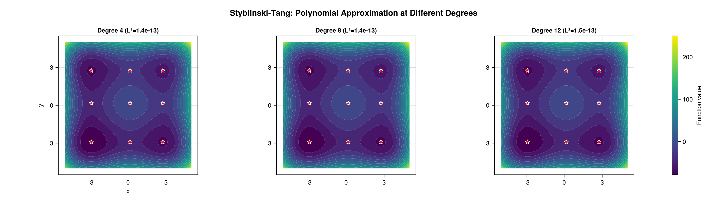

Ecosystem Walkthrough
This page takes one objective function all the way through the three packages that make up the Globtim ecosystem — from a raw function to a refined, plotted set of minima. If you only read one page after Getting Started, read this one.
The three packages
Globtim is split into three packages with a strict one-way dataflow:
globtim globtimpostprocessing globtimplots
(find candidates) → (refine & validate them) → (visualize)
polynomial approx + Optim refinement (g-tol 1e-8, Makie level sets,
critical-point solve ~1e-12 high-prec), grad checks, Morse spectra,
parameter recovery convergence plotsEach stage consumes the previous stage's output and never depends on a later one. You can stop at any stage — globtim alone gives you critical points; the other two add accuracy and pictures.
Install
Globtim is registered in the General registry; the two companion packages are installed from their public repositories:
using Pkg
Pkg.add("Globtim") # core (registered)
Pkg.add(url="https://github.com/gescholt/GlobtimPostProcessing.jl") # refinement & analysis
Pkg.add(url="https://github.com/gescholt/GlobtimPlots.jl") # visualization
Pkg.add("CairoMakie") # a Makie backend for plottingStep 1 — Define an objective
Any function that takes a vector x and returns a scalar works. We use a function with four known minima near (±1, ±1):
using Globtim
using DynamicPolynomials # for @polyvar
my_objective(x) = (x[1]^2 - 1)^2 + (x[2]^2 - 1)^2 + 0.1 * sin(10 * x[1] * x[2])Objectives don't have to be hand-written. The collaborator package DynamicObjectives.jl supplies a catalogue of ODE-based objective functions — parameter-estimation landscapes from dynamical-systems models — that drop into the workflow below in place of my_objective.
Step 2 — globtim finds the critical points
globtim approximates my_objective by a polynomial on the box, then solves ∇p = 0 exactly and classifies the resulting critical points. The five calls below are the core workflow (the same sequence appears in examples/custom_function_demo.jl):
using HomotopyContinuation # loads the :hc solver extension
# 1. Problem specification: domain [-2,2] × [-2,2]
TR = TestInput(my_objective, dim=2, center=[0.0, 0.0], sample_range=2.0)
# 2. Degree-10 Chebyshev approximation
pol = Constructor(TR, 10, precision=AdaptivePrecision)
# 3. Solve ∇p = 0 for critical points
@polyvar x[1:2]
solutions = solve_polynomial_system(x, pol)
# 4. Map solutions back to the domain and evaluate the true objective
df = process_crit_pts(solutions, my_objective, TR)
# 5. Refine + classify (minimum / saddle / maximum via the Hessian)
df_enhanced, df_min = analyze_critical_points(my_objective, df, TR; enable_hessian=true)df_min now holds the local minima (columns x1, x2, value, …). For this objective you should recover the four (±1, ±1) minima. That is already a usable result — but the coordinates are only as accurate as the degree-10 polynomial fit (typically ~1e-3). The next stage sharpens them.
The polynomial solver is a package extension that activates only when HomotopyContinuation is loaded. It is the default (solver=:hc) and the only solver that scales past two dimensions. See Solvers.
Step 3 — globtimpostprocessing refines & validates
GlobtimPostProcessing takes the raw critical points (accurate to the polynomial fit) and refines them with a local optimizer — to gradient norm 1e-8 by default, down to ~1e-12 in high-precision mode — and checks that each is genuinely a critical point of the true objective (small gradient):
using GlobtimPostProcessing
# In-memory gradient validation: is each candidate actually a critical point of f?
points = [[row.x1, row.x2] for row in eachrow(df_min)]
report = validate_critical_points(points, my_objective; tolerance=1e-6)
println("Valid critical points: $(report.n_valid)/$(length(points))")
# For a saved experiment directory, the full refinement pipeline sharpens the raw
# ~1e-3 candidates (to ~1e-12 in high-precision mode) and writes refined CSV/JSON:
# result = refine_experiment_results(output_dir, my_objective, RefinementConfig())This is the stage that turns "approximately right" coordinates into publishable numbers. It also computes parameter-recovery and quality diagnostics — see the GlobtimPostProcessing repository.
Step 4 — globtimplots visualizes
GlobtimPlots renders the polynomial level set with the critical points overlaid. Load a Makie backend before calling any plot function — CairoMakie for static, publication-quality files; GLMakie for interactive windows:
using GlobtimPlots
using CairoMakie # static backend; use GLMakie instead for interactivity
# Adapt the globtim objects into the plain structs GlobtimPlots consumes
apol = adapt_polynomial_data(pol)
ainp = adapt_problem_input(TR)
fig = cairo_plot_polyapprox_levelset(
apol, ainp, df_enhanced, df_min;
title = "my_objective — polynomial level set (Chebyshev, d = 10)",
xlabel = "x₁", ylabel = "x₂", colorbar_label = "f(x)",
)
CairoMakie.save("my_objective_levelset.png", fig)
(Shown: a Globtim polynomial approximation of the Styblinski–Tang surface. Your my_objective level-set plot has the same anatomy — contours plus the recovered critical points. The full gallery, including the level-set-with-critical-points figure, is regenerated by examples/gallery.jl.)
GlobtimPlots also draws Morse spectra, adaptive-subdivision partitions, and degree-convergence plots — see GlobtimPlots and the GlobtimPlots repository.
Where to go next
- Getting Started — the globtim workflow in more detail
- Examples — the eight runnable demo scripts shipped in the package's
examples/directory - Core Algorithm — what happens inside Step 2
- Critical Point Analysis — classification and statistics
- Solvers — HomotopyContinuation vs. msolve